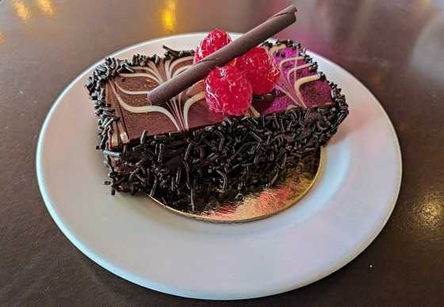
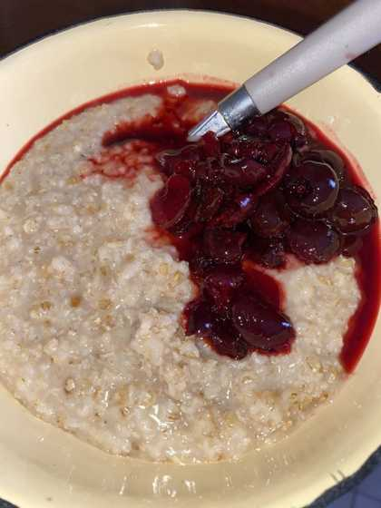
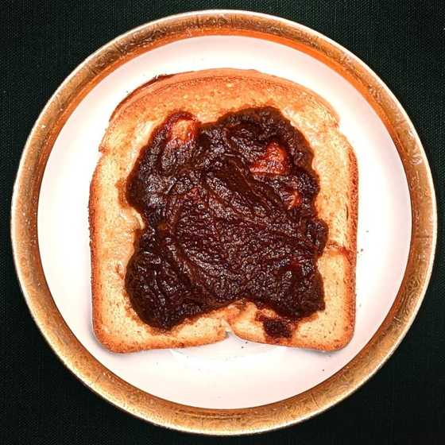

メニュー・ご提供
お菓子やお飲み物など、くわしい内容・価格は準備中です。下の写真はイメージです。






- メニュー
- 準備中
- 価格
- 準備中
- 営業時間
- 準備中
- 定休日
- 準備中(Instagramのカレンダーでご確認ください)
- 電話
- 準備中
口コミ
以下は実際の声ではなく、制作側が作成した「イメージ例」です。
イメージ例段差を気にせず入れて、ほっとしました。ゆっくり休める時間でした。
イメージ例小さなお店で落ち着きます。甘いものと温かい飲み物でひと息つけました。
イメージ例「ことり」という名前のとおり、肩の力が抜けるやさしい空気でした。

アクセス
〒987-0361 宮城県登米市豊里町新田町41
行き方・駐車場・設備の詳細は準備中です。